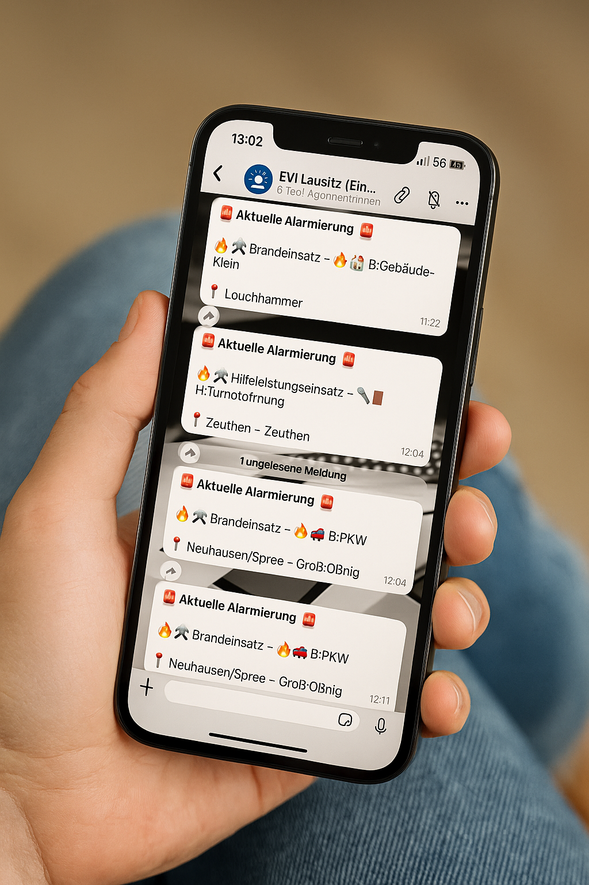

ℹ️ Was ist EVI Lausitz? – Feuerwehr-Einsätze live aus der Region auf WhatsApp
EVI Lausitz steht für Einsatz-Vorinformationen aus der Region – schnell, anonym, kostenlos. Über unsere WhatsApp-Kanäle erhalten Bürgerinnen und Bürger in Echtzeit Hinweise über laufende Feuerwehreinsätze in ihrer Umgebung.
🔒 Datenschutz: Es werden keine Telefonnummern sichtbar, keine Straßennamen oder Hausnummern genannt – nur Ort, Zeit und Einsatzart.
📲 Keine App nötig: Einfach dem WhatsApp-Kanal folgen. Auf Wunsch auf stumm schalten – und trotzdem nichts verpassen.
👨🚒 Zusammenarbeit: Das Projekt wird technisch begleitet von der Freiwilligen Feuerwehr Döbern und ist nicht kommerziell.
📢 Über WhatsApp-Kanäle
WhatsApp-Kanäle sind ein neues Format, das seit 2023 zur Verfügung steht. Sie ermöglichen es Organisationen, Informationen einseitig und anonym an eine große Zahl von Followern zu senden – ähnlich wie ein Newsletter, aber direkt in der vertrauten Umgebung von WhatsApp.
Im Gegensatz zu WhatsApp-Gruppen bleiben alle Telefonnummern unsichtbar. Weder Absender noch andere Kanalmitglieder sehen deine Nummer – und du siehst auch keine anderen. Das sorgt für maximale Datensicherheit und Privatsphäre.
Ein WhatsApp-Kanal funktioniert wie ein stummgeschalteter Info-Kanal: Du abonnierst ihn mit einem Klick, erhältst alle wichtigen Nachrichten direkt auf dein Handy – ohne Chatverläufe, ohne Antworten, ohne Ablenkung. So bleibst du informiert, ohne gestört zu werden.
Gerade für regionale Einsatzinfos wie bei EVI Lausitz bieten Kanäle enorme Vorteile: aktuelle Meldungen in Echtzeit, ohne App-Installation oder Registrierung. Jeder kann mitmachen – freiwillig, kostenlos und datensparsam.
✅ Keine App nötig ✅ Keine Registrierung ✅ 100 % anonym ✅ Jederzeit stumm schaltbar